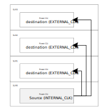

Configure xclbin¶
Overview¶
To configure an xclbin, you need to:
Select the CU you want to include: Compute units high level overview.
Configure the content of the xclbin itself (as described in this page)
Define Wizard configuration JSON file: wizard_cfg.json: CU selection and their configurations.
Configure Vitis™ (see Configure Vitis).
Add extra connections to the CUs: Post system linker TCL hook: postsys_link.tcl.
CU requires an extra continuous clock.
Inter control CU signals (potentially).
Specify Vitis & Vivado options: Vitis options file: vpp.ini.
Tool specific options: e.g. placement constraints, place and route strategy.
The Wizard configuration JSON file: wizard_cfg.json is provided to the xclbin_generate workflow:
Wizard configuration¶
The actual wizard configuration of the xclbin (saved in file named wizard_actual_config.json) is a merge between:
Auto wizard configuration: what the platform is capable of.
This is automatically generated based on the Platform metadata.
This configuration is saved in file called
wizard_auto_config.json.Wizard configuration JSON file: wizard_cfg.json: what you want in the xclbin.
You can overwrite any of the auto-configured settings.
A copy is saved in file called
wizard_user_config.json.
These 3 files are in:
<xbtest_build>/xclbin_generate/output/<dev_platform>/<project_name>/u_ex/run/Where:
<xbtest_build>represents the xbtest build source directory (e.g.path/to/your/xbtest/src/hw/build_source/xbtest_wizard_v6_0/).
<dev_platform>is provided with command line option--xpfm. For example: Ifpath/to/xilinx_u55c_gen3x16_xdma_3_202210_1.xpfmis provided, then<dev_platform>is set withxilinx_u55c_gen3x16_xdma_3_202210_1. Ifpath/to/hw.xsais provided, then<dev_platform>is set withhw. Ifpath/to/your/xilinx-u250-gen3x16-xdma-4.1-202210-1-dev-1-3512975.noarch.rpmis provided, then<dev_platform>is set withxilinx-u250-gen3x16-xdma-4.1-202210-1-dev-1-3512975.noarch.
<project_name>is provided with command line option--project_name.
These configuration JSON files have the same structure:
default
xclbin_configuration
Note
Any default settings can be overwritten inside the xclbin_configuration section
Platform metadata¶
xbtest uses the following Vitis™ command to generate a platform metadata JSON file:
If
.xpfmfile is provided$ platforminfo -p path/to/your/platform.xpfm -j hardwarePlatform -o <xbtest_build>/xclbin_generate/output/<dev_platform>/<project_name>/u_ex/run/platforminfo.jsonIf
.xsafile is provided$ platforminfo -p path/to/your/platform/hw.xsa -o <xbtest_build>/xclbin_generate/output/<dev_platform>/<project_name>/u_ex/run/platforminfo.json
Note
The platform metadata JSON file is saved in <xbtest_build>/xclbin_generate/output/<dev_platform>/<project_name>/u_ex/run/platforminfo.json.
Where:
<xbtest_build>represents the xbtest build source directory (e.g.path/to/your/xbtest/src/hw/build_source/xbtest_wizard_v6_0/).
<dev_platform>is provided with command line option--xpfm. For example: Ifpath/to/xilinx_u55c_gen3x16_xdma_3_202210_1.xpfmis provided, then<dev_platform>is set withxilinx_u55c_gen3x16_xdma_3_202210_1. Ifpath/to/hw.xsais provided, then<dev_platform>is set withhw. Ifpath/to/your/xilinx-u250-gen3x16-xdma-4.1-202210-1-dev-1-3512975.noarch.rpmis provided, then<dev_platform>is set withxilinx-u250-gen3x16-xdma-4.1-202210-1-dev-1-3512975.noarch.
<project_name>is provided with command line option--project_name.
The following information is extracted from the platform metadata JSON:
uniqueName
extensions
xclbin.append_sections.partition_metadata.interfaces[0].interface_uuid
raptor2
part
slrs
resources
<memory_type>where<memory_type>isPLRAM,DDR,HBMorHOST.
sptag
index
slr
gts.<gt_idx>where<gt_idx>is0,1, …
gt_serial_port
diff_clocks
slr_assignment
gt_type
gt_group_select
If one of the expected information is not present in your platform metadata, you’ll have to define everything in the Wizard configuration JSON file: wizard_cfg.json.
Important
Do not confuse this platform metadata with xbtest platform definition.
The first one is linked to the
.xpfmfile present in the development platform package. This file contains platform metadata including information on interface, clock, valid SLRs, allocated resources and memory. This info is required to build xbtest xclbin.The second is the Platform definition JSON file: xbtest_pfm_def.json which describes to xbtest SW how to use the xclbin (see Fill platform definition JSON).
Wizard configuration JSON file: wizard_cfg.json¶
This file is used as input of the xclbin_generate workflow which creates the xclbin (see Build xclbin). It defines which CUs are present in the xclbin (quantity, localization and some basic configuration).
This JSON file consists of a list of configurations. Each one describes the content of a xclbin.
This file contains multiple sections:
default: section used to define parameters values used for all configurations (see default section)
Most of the parameters are automatically extracted from the Platform metadata.
Overwrite (or add) parameter of the platform definition.
xclbin_configuration: sections defining various configuration.
Any configuration names are allowed. It’s at build time that you select which xclbin you want to generate via the xclbin_generate command line option
--wizard_config_name.CU selections: power, memory, GT_MAC, GT_PRBS and GT_LPBK.
Note
To test the GT, we recommend using GT_MAC. If there is not enough resource in the FPGA for multiple of them, we suggest using GT_PRBS as it doesn’t require a traffic source.
Extra CU configuration: any
defaultsettings can be overwritten.Note
We recommend to name xbtest_stress, the configuration used to generate the delivered xclbin.
This page will guide you through the creation of Wizard configuration JSON file: wizard_cfg.json step by step. Starting by the default section then walk you through all supported CU.
This page also contains Wizard configuration examples for different platforms. Further you’ll find the complete definition of all supported parameters.
You should use and update the Wizard configuration JSON file template: wizard_cfg.json generated during the initialization phase.
default section¶
In this section, you will be able to:
Define where to find power CU floorplan sources.
Include link to Vitis™ configuration.
Overwrite (or add) the definition of the platform:
Clock: by default, xbtest uses 2 clocks:
300 MHz: AXI infrastructure.
500 MHz: power CU.
PLRAM: location (SLR) & selection (multiple PLRAM could be present within the same SLR).
Each CU requires a PLRAM connection. To optimize performance, you need to connect the CU to the PLRAM of the same SLR.
Location of CU: SLR selection.
GT connections: reference clock and port.
Memory CU configuration:
Connections to the platform memory infrastructure: sptag.
Type: single/multi-channel.
AXI4 configuration: data size, thread, max supported outstanding transaction.
You only need to overwrite parameter if they are not defined as expected in the platform information.
Link to the power CU floorplan sources and Vitis configuration are defined in the build section, while platform & cu_configuration can be used to overwrite (or define) platform and CU settings:
build
pwr_floorplan_dir: directory of power CU floorplan sources.
vpp_options_dir: directory containing Vitis configuration.
display_pwr_floorplan.
vpp_link_output.
platform
fpga_part.
name.
interface_uuid.
is_nodma.
p2p_support.
mac_addresses_available.
gt:slr,type,group_select(quad).
cu_configuration
power: Throttle mode (see power: Power CU configuration).
memory: Type, target/connection, AXI4 configuration (see memory: Configure memory CU).
gt: Differential clock and port selection (see gt: Configure GT CUs (GT_MAC, GT_LPBK & GT_PRBS) and gt: Configure GT MAC CU).
gt_mac: XXV IP selection.
gt_prbsandgt_lpbk
verify: SLR and DNA read selection (see verify: Configure verify CU)
clock: frequency (see clock: Clock speed).
plram_selection: SLR location and selection (see plram_selection: PLRAM connections).
Important
With Versal device, the default clock settings should be updated to maximize the AIEngine power consumption (see clock: Clock speed).
platform parameters of wizard configuration JSON file¶
The following table describes the parameters supported under the platform node of the Wizard configuration JSON file: wizard_cfg.json.
Node name |
Description |
||
|---|---|---|---|
fpga_part |
FPGA part number. |
||
name |
XSA name. |
||
interface_uuid |
XSA interface UUID. See interface_uuid: Platform interface UUID dependency. |
||
is_nodma |
Set to Possible values: Defaults to: |
||
p2p_support |
Indicate if the platform supports P2P.
When set to Possible values: Defaults to: |
||
mac_addresses_available |
Number of available board MAC addresses. See mac_addresses_available: Available board MAC addresses. Possible values: Defaults to: |
||
gt |
|
GT index. See gt: GT platform definition. |
|
slr |
SLR assignment of the GT. GT capable CU will be assigned to the SLR. Possible values: |
||
type |
Type of GT. Possible values: Defaults to: |
||
group_select |
GT group (Quad) assignment |
||
mac_addresses_available: Available board MAC addresses¶
When mac_addresses_available is:
set to
defaultor greater than the maximum number of necessary MAC addresses for all GT_MAC CUs (1 address per lane for each GT_MAC CU), then all lanes of all GTs are used in the GT pre-canned tests.else, then the GT pre-canned tests will be automatically updated based on the number of available board MAC addresses. Some lanes are assigned with an available board MAC address and other lanes are disabled.
gt_mac.json: One MAC address is assigned for each lane of each GT_MAC CU (GT[0].lane[0],GT[1].lane[0],GT[0].lane[1],GT[1].lane[1], etc).
gt_mac_lpbk.json: Similar togt_mac.json.
switch_25gbe.json: MAC addresses are assigned for each lane pair of each GT_MAC CU (GT[0].lane[0/1],GT[1].lane[0/1],GT[0].lane[2/3],GT[1].lane[2/3], etc).
switch_10gbe.json: Similar toswitch_25gbe.json.
stress.json: Similar toswitch_25gbe.json.
gt_mac_port_to_port.json: MAC addresses are assigned for each lane connection between two GT_MAC CUs (GT[0/1].lane[0],GT[0/1].lane[1], etc).
interface_uuid: Platform interface UUID dependency¶
xbtest SW requires the interface UUID defined in the xclbin user metadata to select the compatible xclbin from provided BDF.
By default, it is automatically extracted from the Platform metadata. If not defined in the platform metadata, the xclbin_generate workflow will extract it from the xclbin and insert it to the xclbin metadata.
If needed, the interface UUID can also be defined in Wizard configuration JSON file: wizard_cfg.json before generating the xclbin.
gt: GT platform definition¶
In this section, you can overwrite the FPGA part or the GT location. If the platform metadata is defined as expected, you should not use this section.
If your platform doesn’t contain the GT definition, here is an example of how to declare 2 GTs. The configuration syntax uses a GT-based indexation.
"platform": {
"gt": {
"0": {
"group_select": ["Quad_X0Y11"],
"type": "GTY",
"slr": "SLR2"
},
"1": {
"group_select": ["Quad_X0Y10"],
"type": "GTY",
"slr": "SLR2"
},
}
}
build Parameters of wizard configuration JSON file¶
In this required section, you specify the directory location of:
Power CU floorplan sources (see Define power CU floorplan).
Vitis™ configuration (see Configure Vitis).
The xclbin_generate workflow copies the files in the configuration directory into the run directory.
It is recommended to set all paths in the configuration relatively to the xclbin_generate output directory so xbtest_wizard and Vitis can use these local copies instead of the source files directly.
Tip
In Wizard configuration JSON file: wizard_cfg.json, use relative path to run directory: ../
"build": {
"pwr_floorplan_dir" : "../pwr_cfg",
"vpp_options_dir" : "../vpp_cfg"
}
The following table describes the parameters supported under the build node of the Wizard configuration JSON file: wizard_cfg.json.
Node name |
Description |
|---|---|
pwr_floorplan_dir |
Directory where the floorplan sources of the power CUs are located (see Define power CU floorplan):
Note that the power floorplan sources are not processed/checked if no power cu was selected in cu_selection. Build stops after opt design phase if |
vpp_options_dir |
Specify additive INI file for v++ processing. See Configure Vitis. Vitis options file: vpp.ini file must exist within directory. Use with caution as any parameter in this file could overwrite a parameter set by xbtest in the generated |
display_pwr_floorplan |
Enable display of power floorplan. See Define power CU floorplan. If set to Possible values: Defaults to: |
vpp_link_output |
Select the file type of Vitis linker output. See vpp_link_output: Vitis linker output. Possible values: Defaults to: |
vpp_link_output: Vitis linker output¶
When vpp_link_output is set to:
default: If the FPGA part (platform.fpga_part) isxcvc*and Vitis version is greater than 2022.1, thenvpp_link_outputparameter defaults toxsa, else, it defaults toxclbin.
xsa: The Vitis linker output is set tovpp_link.xsaand the Vitis packager is used to generate the an xclbin from this XSA.
xclbin: The Vitis linker output is set tovpp_link.xclbin. Then if AIE is used in the xclbin, the Vitis packager is run with this this xclbin to generate the final xclbin.
cu_configuration parameters of wizard configuration JSON file¶
Unless your platform is not defined as expected, nearly the entire cu_configuration will be auto-configured based on the Platform metadata.
This automatically filled cu_configuration is saved into <xbtest_build>/xclbin_generate/output/<dev_platform>/<project_name>/u_ex/run/wizard_auto_config.json (see HW build workflows overview).
Where:
<xbtest_build>represents the xbtest build source directory (e.g.path/to/your/xbtest/src/hw/build_source/xbtest_wizard_v6_0/).
<dev_platform>is provided with command line option--xpfm. For example: Ifpath/to/xilinx_u55c_gen3x16_xdma_3_202210_1.xpfmis provided, then<dev_platform>is set withxilinx_u55c_gen3x16_xdma_3_202210_1. Ifpath/to/hw.xsais provided, then<dev_platform>is set withhw. Ifpath/to/your/xilinx-u250-gen3x16-xdma-4.1-202210-1-dev-1-3512975.noarch.rpmis provided, then<dev_platform>is set withxilinx-u250-gen3x16-xdma-4.1-202210-1-dev-1-3512975.noarch.
<project_name>is provided with command line option--project_name.
If something is not defined as expected, or you simply want to overwrite the default behaviour, this section explains the various options available.
The following table describes the parameters supported under the cu_configuration node of the Wizard configuration JSON file: wizard_cfg.json.
Node name |
Description |
||||
|---|---|---|---|---|---|
clock |
|
Clock index. See clock: Clock speed. Possible values: |
|||
freq |
Value of the clock frequency in MHz: Possible values: in [ |
||||
plram_selection |
|
Define the PLRAM sptag to use for the CU located in SLR Algorithm selects the first PLRAM found in each SLR for this mapping. This can be overwritten for example if the user wants to use the PLRAM from another SLR. Possible values: |
|||
power |
|
SLR index. See power: Power CU configuration. Possible values: integers. |
|||
throttle_mode |
Mode of the clock throttling module of the power CU. Possible values: Defaults to: |
||||
gt |
|
GT index. See gt: Configure GT CUs (GT_MAC, GT_LPBK & GT_PRBS). Possible values: integers. |
|||
diff_clocks |
GT diff clocks assignment. |
||||
serial_port |
GT serial port assignment. |
||||
gt_mac |
|
GT index. See gt: Configure GT MAC CU. Possible values: integers. |
|||
ip_sel |
IP used in the GT_MAC compute unit. Possible values: Defaults to: |
||||
enable_rsfec |
When set to Possible values: Defaults to: |
||||
memory |
|
Name of the memory type. See memory: Configure memory CU. |
|||
global |
target |
Memory target used for the memory CU configuration. Possible values: Defaults to: |
|||
axi_data_size |
AXI data size in bits of each port for each memory CU. Possible values: Defaults to: |
||||
axi_id_threads |
Maximum quantity of AXI ID threads of each ports for each memory CU. The CU will rotate the ID between each transfer. Possible values: Defaults to: Note The AXI protocol includes AXI ID transaction identifiers. A master can use these to identify separate transactions that must be returned in order. All transactions with a given AXI ID value must remain ordered, but there is no restriction on the ordering of transactions with different ID values. This means a single physical port can support out-of-order transactions by acting as a number of logical ports, each of which handles its transactions in order. By using AXI IDs, a master can issue transactions without waiting for earlier transactions to complete. This can improve system performance, because it enables parallel processing of transactions. |
||||
axi_outstanding |
Maximum quantity of AXI outstanding transactions of each port for each memory CU. Possible values: Defaults to: |
||||
specific |
|
Memory CU specific configuration.
Note To override one parameter for one CU, the new specific configuration for all CUs must be specified. |
|||
slr |
SLR assignment of memory CU. Possible values: |
||||
sptag |
List of sptags to be used for each channel memory CU.
|
||||
verify |
|||||
slr |
Define SLR location of the verify CU. Possible values: By default: based on |
||||
dna_read |
Select to access or not the CONFIG_SITE of the platform. Possible values: Defaults to: based on |
||||
power: Power CU configuration¶
The configuration parameter throttle_mode selects the way all resources included in the power CU are used (clocked/controlled).
To consume as much power as possible, the power CU resources are running on the fast clock ap_clk_2 (default frequency of 500 MHz). There are 2 ways to control the power consumed (selection is based on the clocking infrastructure of the platform):
Throttling the clock (default and preferable method).
Throttling the input CE of each resource macro.
For multi SLR FPGA only, throttling can also be coming from another Power CU. This reduces pressure on the clocking structure of the FPGA as only one Power CU contains the throttling mechanism and all other CUs are cascaded from it. The throttle logic doesn’t necessarily need to be in SLR0.
AIEngine can’t currently be cascaded across multi-SLR.
The following figure shows the different ways of controlling the power CU resources. The description of the throttling mechanism is beyond the scope of this documentation.
Power throttle¶
All of these resulting in the following modes of configuration for a Power CU.
Throttle mode |
Description |
Power CU |
|---|---|---|
|
Clock throttling generated in the power CU. |
Source |
|
Clock throttling coming from another power CU (only possible in multi SLR FPGA). |
Destination |
|
CE throttling generated in the power CU. |
Source |
|
CE throttling coming from another power CU (only possible in multi SLR FPGA). |
Destination |
Note
Whatever the configuration selected for each power CU, the SW always controls them all together in identical manner.
The wizard will interconnect all cascaded power CUs with their respective source via the Generated Vitis options file: vpp_link.ini:
All destination
EXTERNAL_CLKto a single sourceINTERNAL_CLK.All destination
EXTERNAL_MACROto a single sourceINTERNAL_CLK.
By default, the wizard will auto-configure the throttle mode of the Power CU with lower index SLR as containing the throttle mechanism (INTERNAL_CLK) and all other CUs are hooked to it (EXTERNAL_CLK).
If the default configuration is not suitable (e.g. you want to move the source power CU into another SLR), you only need to define the source.
The wizard recognizes the first INTERNAL defined and automatically selects EXTERNAL for all other SLR. If you defined multiple INTERNAL, the wizard would use the lowest index as source for all EXTERNAL.
Alternatively, you can also define all power CU as INTERNAL (meaning that each of them includes its throttle mechanism).
In case of mixed configuration (CLK and MACRO), it’s recommended to list all SLR and their respective configuration. If needed, you can also Overwrite cascaded power CU connectivity.
The following table presents different examples of throttle mode configuration considering a FPGA with 4 SLRs (SLR0, SLR1, SLR2 and SLR3):
Example |
Description |
Wizard configuration JSON file |
Illustration |
|---|---|---|---|
Default cascade |
By default, power CUs in:
|
No configuration required |

Default cascade¶ |
Cascade with CLK throttle |
You can set the source power CU in another SLR. In this example, power CUs in:
Note The wizard recognizes that you’ve got only one source
defined and automatically selects |
"cu_configuration" : {
"power" : {
"2" : {
"throttle_mode": "INTERNAL_CLK"
}
}
}
|
Cascade with CLK throttle¶ |
Cascade with CE throttle |
You can change the type of throttle mode. In this example, power CUs in:
Note The wizard recognizes that you’ve got only one source
defined and automatically selects |
"cu_configuration" : {
"power" : {
"1" : {
"throttle_mode": "INTERNAL_MACRO"
}
}
}
}
|
Cascade with CE throttle¶ |
Mixed Control:
|
You can mix the throttling control mode but you have to connect clock/CE signals accordingly in your Vitis options file: vpp.ini. In this example, power CUs in:
|
"cu_configuration" : {
"power" : {
"0" : {
"throttle_mode": "INTERNAL_MACRO"
},
"1" : {
"throttle_mode": "INTERNAL_CLK"
},
"2" : {
"throttle_mode": "EXTERNAL_MACRO"
},
"3" : {
"throttle_mode": "EXTERNAL_CLK"
}
}
}
|
Mixed control¶ |
Note
Your shell may also include another clock throttling capability.
It is a safety feature which slows down all clocks going to all CU when the FPGA power is getting closer to its limits.
This is independent to the clock_throttle block used internally by the power CU.
gt: Configure GT CUs (GT_MAC, GT_LPBK & GT_PRBS)¶
These 3 CUs depend on the GT location (see platform parameters of wizard configuration JSON file) but also on its connections. The GT macro has 2 reference input clocks and 1 data port interface.
Whatever CU is connected to the GT, you may have to select the GT reference clock. You may potentially also select the platform data port if it is not defined (see Platform metadata).
Expected location:
hardwarePlatforms.hardwarePlatform.extensions.raptor2.resources.gts.<gt_idx>
Warning
Ideally GT_MAC CU should be used, but if there is not enough resource in the FPGA, it’s recommended to use GT_PRBS (as it doesn’t require any traffic source).
The configuration syntax uses the GT-based indexation. Here is an example of GT ref clock and data port definition
"cu_configuration": {
"gt": {
"0": {
"serial_port": ["io_gt_qsfp_00"],
"diff_clocks": ["io_clk_qsfp_refclka_00"]
}
}
}
Once the GT is defined, you can now define the CU.
gt: Configure GT MAC CU¶
The GT_MAC has 2 configurations:
RS-FEC.
Sub IP selection.
GT MAC CU uses and requires license for Xilinx® LogiCORE™ IP 10G/25G Ethernet solution (XXV). Depending on the FPGA used, this IP contains or not the GT macro.
If the GT macro is not part of XXV Ethernet, you need more than this IP alone.
A Sub-system is provided in xbtest HW sources and you’ll have to select it by setting the parameter ip_sel.
Mode selection |
Description |
|---|---|
|
Use XXV Ethernet LogiCore contains the GT macro.
|
|
Use a sub-system containing the XXV Ethernet and the GT macro. |
By default, the RS-FEC is not included.
Only include it if needed as it uses a lot of logic (40k FF and 50k LUT) and may impeach timing closure of the xclbin by setting the parameter enable_rsfec.
Mode selection |
Description |
|---|---|
|
Don’t include RS-FEC.
|
|
Include RS-FEC. |
Note
GT_LPBK & GT_PRBS CUs have no configuration.
The configuration syntax uses the GT-based indexation:
"cu_configuration": {
"gt_mac": {
"0": {
"ip_sel": "xxv",
"enable_rsfec": false
}
}
}
memory: Configure memory CU¶
There are 2 sets of settings for the memory type:
Physical: memory type/location and AXI4 configuration.
CU-related: multi/single-channel CU location and how CU ports are connected to the memory:
Physical configuration¶
Per memory type, the physical configuration parameters are defined in global section.
It defines the memory CU AXI4 settings and where the memory is located: on board (for example: DDR, HBM) or on the host.
"global" : {
"target" : "board",
"axi_data_size" : 512,
"axi_id_threads" : 1,
"axi_outstanding" : 32
}
verify: Configure verify CU¶
The verify CU is always present in the xclbin and includes the following hardware safety mechanisms:
Watchdog: Stops all CUs after a programmable delay (default 15 seconds) in the case of the application software failing to perform the watchdog reset.
Status Register:
Detects and prevents multiple instances of application software trying to control/access the same Alveo™ card.
Detects if CU clocks have been throttled down. CU Clocks could have been slowed down automatically to prevent over-powering the card. Slower clock will affect test results.
DNA : Reports the FPGA DNA value. It uses the DNA_PORT2 of CONFIG_SITE macro (see Vivado Partial Reconfiguration (UG909)). The location (SLR) of this
CONFIG_SITEis automatically detected when creating the power floorplan (see Initialize power floorplan sources) and added to the dynamic_geometry.json.Note
In case of multi SLR, only the first CONFIG_SITE found will be listed. This will dictate the SLR location of the verify CU.
If a CONFIG_SITE is available in various SLR in your platform, you can overwrite the default SLR selection.
This will move the verify CU in the selected SLR.
If no CONFIG_SITE is not available in your platform, you can manually disable the DNA read, but the verify CU will still be present in your xclbin.
"verify" : {
"slr": "SLR2",
"dna_read": false
},
clock: Clock speed¶
xbtest uses 2 clocks:
CU RTL Name |
Vitis Name |
Default frequency |
Description |
|---|---|---|---|
|
|
300 MHz |
CU <-> memory connection (DDR/HBM/PLRAM/HOST) |
|
|
500 MHz |
Only used by power CU only. Fast clock to consume as much as possible |
It’s possible to change their default value.
With Versal board, the AIEngine are used to consume power. The power of AIEngine is controlled by the quantity of data passing through them. The data are generated on the ap_clk.
To maximize the power consumption, the data rate generation should be aligned with the maximum data throughput of the AIEngine.
The AIEngine throughput is depending on their operational frequency (typically 1250MHz, but you need to check your platform settings)
Caution
Increasing ap_clk clock frequency too much may have an adverse impact on timing closure, as this clock is used by all CUs.
Note
By default, you should not need to define any clock settings unless you’re using AIEngine.
Default clock configuration
"cu_configuration": {
"clock": {
"0": {
"freq": 300
},
"1": {
"freq": 500
}
}
}
Versal Board clock configuration
For Versal, note that:
"cu_configuration": {
"clock": {
"0": {
"freq": 313
},
"1": {
"freq": 600
}
}
}
plram_selection: PLRAM connections¶
By default, a CU is connected to the first (lower index) PLRAM available in the SLR. If the FPGA is 1 SLR, it still may have multiple PLRAM. All CUs within a SLR are connected to the same PLRAM.
With this configuration, you’ll be able to select which PLRAM is used for each given SLR. It also means that all CU present in the SLR will be connected to the selected PLRAM.
If the selected PLRAM could be in another SLR, this will reduce the Memory Sub-System logic present in the CU SLR but increase cross SLR logic/routing.
Note
By default, you should not need to define any PLRAM selection as this is extracted from the Platform metadata.
You need to create a mapping between slr and (sptag & index).
For example, if a FPGA has 4 SLRs with 2 PLRAM per SLR, then normally CU will use PRLAM[0/2/4/6]. If you want to force SLR0 to use the second PLRAM, you need to map (from Platform metadata)
slr(SLR0),sptag(PLRAM) andindex(1).
The following shows how to use the second PLRAM of SLR0:
"cu_configuration": {
"plram_selection": {
"SLR3": "PLRAM[6]",
"SLR2": "PLRAM[4]",
"SLR1": "PLRAM[2]",
"SLR0": "PLRAM[1]"
}
}
cu_selection Parameters of wizard configuration JSON file¶
The following table describes the parameters supported under the cu_selection node of the Wizard configuration JSON file: wizard_cfg.json.
Node name |
Description |
|---|---|
power |
Select power CUs to be included specifying list of SLR indexes. Possible values: Defaults: none. |
gt_mac |
Select GT_MAC CUs to be included specifying list of GT indexes. Possible values: Defaults: none. |
gt_prbs |
Select GT_PRBS CUs to be included specifying list of GT indexes. Possible values: Defaults: none. |
gt_lpbk |
Select GT_LPBK CUs to be included specifying list of GT indexes. Possible values: Defaults: none. |
memory |
Select memory CUs to be included specifying list of memory types. Possible values: Defaults: none. |
Auto-configuration examples¶
The following table describes some examples of how to override the auto-configuration. The exact content of the file is described further, but these examples shows how everything is merged.
Override GT definition¶
For older platform like xilinx_u50lv_gen3x4_xdma_2_202010_1, the GT definition in platform metadata is not as expected by xbtest.
The auto-configured GT parameters at dictionary key io_gt_qsfp_00 are unset and you need to define the GT entirely.
Auto wizard configuration (platform metadata) |
Wizard configuration JSON (provided by user) |
Actual wizard configuration (merged) |
|---|---|---|
{
"default" : {
"platform" : {
"gt" : {
"io_gt_qsfp_00" : {
"slr" : "SLR1",
"type" : "GTY",
"group_select" : []
}
}
},
"cu_configuration" : {
"gt" : {
"io_gt_qsfp_00" : {
"diff_clocks" : ["io_clk_qsfp_refclka_00"],
"serial_port" : []
}
},
"gt_mac" : {
"io_gt_qsfp_00" : {
"ip_sel" : "xxv",
"enable_rsfec" : false
}
}
}
}
}
|
{
"default": {
"platform": {
"gt": {
"0": {
"group_select" : [
"Quad_X0Y7"
],
"type" : "GTY",
"slr" : "SLR1"
}
}
},
"cu_configuration": {
"gt": {
"0": {
"serial_port" : ["io_gt_qsfp_00"],
"diff_clocks" : ["io_clk_qsfp_refclka_00"]
}
},
"gt_mac": {
"0": {
"ip_sel" : "xxv",
"enable_rsfec" : false
}
}
}
}
}
|
{
"xbtest_stress" : {
"platform" : {
"gt" : {
"0" : {
"slr" : "SLR1",
"type" : "GTY",
"group_select" : ["Quad_X0Y7"]
}
}
},
"cu_configuration" : {
"gt" : {
"0" : {
"diff_clocks" : ["io_clk_qsfp_refclka_00"],
"serial_port" : ["io_gt_qsfp_00"]
}
},
"gt_mac" : {
"0" : {
"ip_sel" : "xxv",
"enable_rsfec" : false
}
}
}
}
}
|
Define new memory type¶
Some platforms require definition of new memory types (e.g. u25 PS_DDR, PL_DDR). In this case, you need to specify all parameters of these new memory types. Auto-configured and new user-defined memory types are present in the actual wizard configuration.
Auto wizard configuration (platform metadata) |
Wizard configuration JSON (provided by user) |
Actual wizard configuration (merged) |
|---|---|---|
"memory" : {
"DDR" : {
"global" : {
"target" : "board",
"axi_data_size" : 512,
"axi_id_threads" : 1,
"axi_outstanding" : 32
},
"specific" : {
"0" : {
"slr" : "SLR0",
"sptag" : ["DDR[0]"]
},
"1" : {
"slr" : "SLR1",
"sptag" : ["DDR[1]"]
}
}
}
}
|
"memory": {
"PL_DDR": {
"global" : {
"target" : "board",
"axi_data_size" : 256,
"axi_id_threads" : 1,
"axi_outstanding" : 32
},
"specific": {
"0": {
"slr" : "SLR0",
"sptag" : ["DDR[0]"]
}
}
},
"PS_DDR": {
"global" : {
"target" : "board",
"axi_data_size" : 128,
"axi_id_threads" : 1,
"axi_outstanding" : 32
},
"specific": {
"0": {
"slr" : "SLR0",
"sptag" : [
"DDR[1]", "DDR[1]", "DDR[1]", "DDR[1]"
]
}
}
}
}
|
"memory": {
"DDR" : {
"global" : {
"target" : "board",
"axi_data_size" : 512,
"axi_id_threads" : 1,
"axi_outstanding" : 32
},
"specific" : {
"0" : {
"slr" : "SLR0",
"sptag" : ["DDR[0]"]
},
"1" : {
"slr" : "SLR1",
"sptag" : ["DDR[1]"]
}
}
},
"PL_DDR": {
"global" : {
"target" : "board",
"axi_data_size" : 256,
"axi_id_threads" : 1,
"axi_outstanding" : 32
},
"specific": {
"0": {
"slr" : "SLR0",
"sptag" : ["DDR[0]"]
}
}
},
"PS_DDR": {
"global" : {
"target" : "board",
"axi_data_size" : 128,
"axi_id_threads" : 1,
"axi_outstanding" : 32
},
"specific": {
"0": {
"slr" : "SLR0",
"sptag" : [
"DDR[1]", "DDR[1]", "DDR[1]", "DDR[1]"
]
}
}
}
}
|
Override existing memory type¶
xbtest can auto configure 3 memory types: DDR, HBM, HOST.
You can override memory global configuration of any auto-configured memory type.
Auto wizard configuration (platform metadata) |
Wizard configuration JSON (provided by user) |
Actual wizard configuration (merged) |
|---|---|---|
"memory" : {
"HBM" : {
"global" : {
"target" : "board",
"axi_data_size" : 512,
"axi_id_threads" : 1,
"axi_outstanding" : 32
},
"specific" : {
"0" : {
"slr" : "SLR0",
"sptag" : [
"HBM[0]", "HBM[1]", "HBM[2]", "HBM[3]",
"HBM[4]", "HBM[5]", "HBM[6]", "HBM[7]",
"HBM[8]", "HBM[9]", "HBM[10]", "HBM[11]",
"HBM[12]", "HBM[13]", "HBM[14]", "HBM[15]",
"HBM[16]", "HBM[17]", "HBM[18]", "HBM[19]",
"HBM[20]", "HBM[21]", "HBM[22]", "HBM[23]",
"HBM[24]", "HBM[25]", "HBM[26]", "HBM[27]",
"HBM[28]", "HBM[29]", "HBM[30]", "HBM[31]"
]
}
}
}
}
|
"memory" : {
"HBM" : {
"global" : {
"axi_data_size" : 256
}
}
}
|
"memory" : {
"HBM" : {
"global" : {
"target" : "board",
"axi_data_size" : 256,
"axi_id_threads" : 1,
"axi_outstanding" : 32
},
"specific" : {
"0" : {
"slr" : "SLR0",
"sptag" : [
"HBM[0]", "HBM[1]", "HBM[2]", "HBM[3]",
"HBM[4]", "HBM[5]", "HBM[6]", "HBM[7]",
"HBM[8]", "HBM[9]", "HBM[10]", "HBM[11]",
"HBM[12]", "HBM[13]", "HBM[14]", "HBM[15]",
"HBM[16]", "HBM[17]", "HBM[18]", "HBM[19]",
"HBM[20]", "HBM[21]", "HBM[22]", "HBM[23]",
"HBM[24]", "HBM[25]", "HBM[26]", "HBM[27]",
"HBM[28]", "HBM[29]", "HBM[30]", "HBM[31]"
]
}
}
}
}
|
Wizard configuration examples¶
The following table provides example of Wizard configuration JSON file: wizard_cfg.json for some platforms:
Platform |
Description |
wizard_cfg.json |
|---|---|---|
xilinx_u55c_gen3x16_xdma_3_202210_1 |
U55c example:
|
|
xilinx_u250_gen3x16_xdma_4_1_202210_1 |
U250 example:
|
|
xilinx_u50lv_gen3x4_xdma_2_202010_1 |
U50lv example:
|
Wizard configuration JSON file template¶
Here is a template/view of wizard configuration JSON file containing all the parameters listed above:
{
"default": {
"platform": {
"fpga_part": "<fpga_part>",
"name": "<name>",
"interface_uuid": "<interface_uuid>",
"is_nodma": true/false,
"p2p_support": true/false,
"mac_addresses_available": <mac_addresses_available>,
"gt": {
"<gt_idx>": {
"slr": "<slr>",
"type": "<type>",
"group_select": ["<group_select>"]
}
}
},
"build": {
"pwr_floorplan_dir": "../pwr_cfg",
"vpp_options_dir": "../vpp_cfg",
"display_pwr_floorplan": true/false
},
"cu_configuration": {
"clock": {
"<clk_idx>": {
"freq": <freq>
}
},
"plram_selection": {
"<slr>": "<plram_sptag>"
},
"verify": {
"slr": "<slr>",
"dna_read": true/false
},
"gt": {
"<gt_idx>": {
"serial_port": ["<serial_port>"],
"diff_clocks": ["<diff_clocks>"]
}
},
"gt_mac": {
"<gt_idx>": {
"ip_sel": "<ip_sel>",
"enable_rsfec": true/false
}
},
"power": {
"<slr_idx>": {
"throttle_mode": "<throttle_mode>"
}
},
"memory": {
"<mem_type>": {
"global": {
"target": "<target>",
"axi_data_size": <axi_data_size>,
"axi_id_threads": <axi_id_threads>,
"axi_outstanding": <axi_outstanding>
},
"specific": {
"<cu_idx>": {
"sptag": [
"ch0_sptag", "ch1_sptag", "..."
],
"slr": "<slr>"
}
}
}
}
}
},
"xbtest_stress": {
"cu_selection": {
"power": [<slr_idx>],
"gt_mac": [<gt_idx>],
"gt_prbs": [<gt_idx>],
"memory": ["<mem_type>"]
}
}
}